一句话回答
大语言模型（LLM）本质是用海量语料预训练、参数达到百亿/千亿级别、以「预测下一个 token」为统一目标的自回归生成模型。
它和传统 NLP 模型最根本的区别可以总结为三点：
- 任务方式：传统 NLP 是「一任务一模型」的流水线；LLM 是「一个模型干所有事」，靠 Prompt 切换任务。
- 输出范式：传统 NLP 是判别式（输出标签/概率）；LLM 是生成式（输出文本）。
- 能力来源：传统 NLP 靠显式监督训练；LLM 靠大规模预训练 + 涌现能力，能学到没教过它的本领。
一、传统 NLP 是怎么干活的？
传统 NLP 的工作方式是「流水线」：一个完整任务被拆成多个独立步骤，每一步用一个专门的小模型完成。
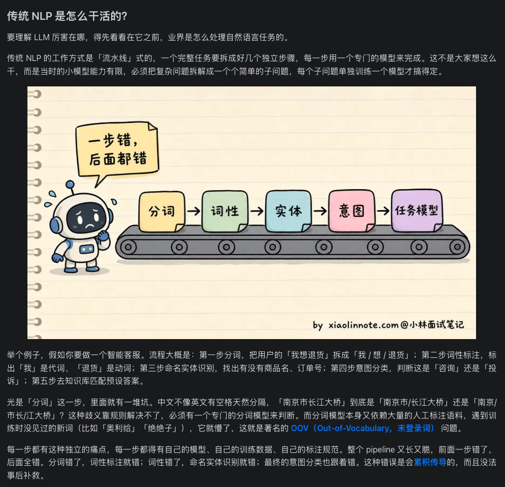
比如做智能客服，流程大概是：
- 分词：把「我想退货」拆成「我 / 想 / 退货」
- 词性标注：「我」是代词，「退货」是动词
- 命名实体识别：找出商品名、订单号
- 意图分类：判断是「咨询」还是「投诉」
- 答案匹配：去知识库找预设答案
每个子问题单独训练一个模型，Pipeline 又长又脆：前面一步错了，后面全错。
传统 NLP 的两大痛点
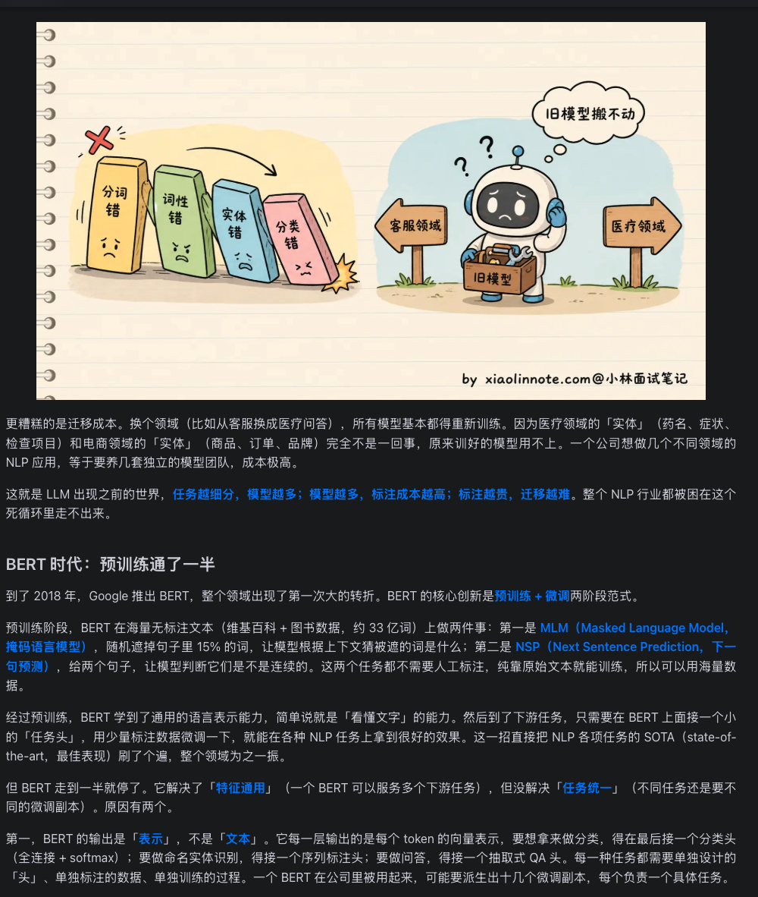
分词错了 → 词性标错 → 实体识别错 → 意图分类错。这种错误没法事后补救。
从客服换到医疗，实体、意图、知识库全变了，基本等于重新养一支模型团队。
二、BERT 时代：预训练通了一半
2018 年 Google 推出 BERT，NLP 迎来第一次大转折。BERT 的核心创新是预训练 + 微调两阶段范式。
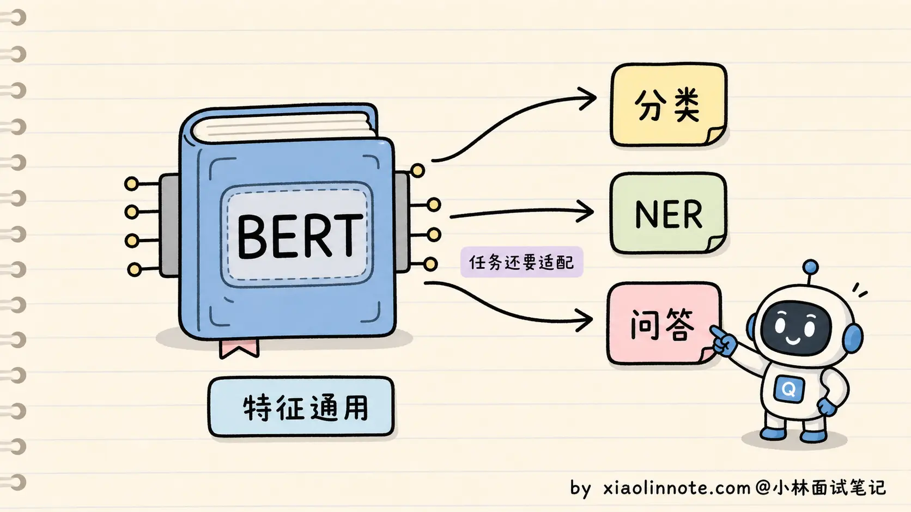
预训练阶段，BERT 在海量无标注文本（维基百科 + 图书，约 33 亿词）上做两件事：
- MLM（Masked Language Model）：随机遮住 15% 的词，让模型根据上下文猜被遮的词。
- NSP（Next Sentence Prediction）：给两个句子，判断它们是否连续。
这样 BERT 学到了通用的语言表示能力。下游任务只需要接一个「任务头」，用少量标注数据微调。
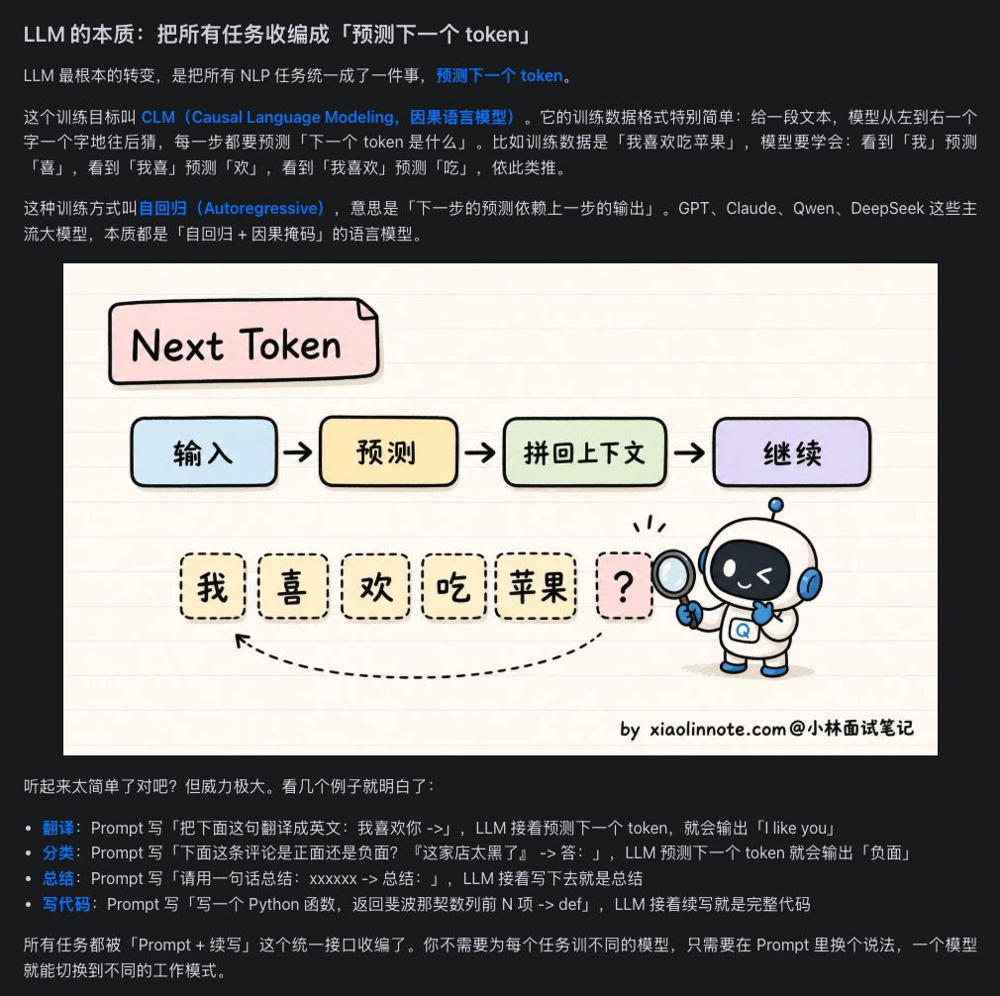
三、LLM 的本质：预测下一个 token
LLM 最根本的转变，是把所有 NLP 任务统一成一件事：预测下一个 token。
这个训练目标叫 CLM（Causal Language Modeling，因果语言模型）：给一段文本，模型从左到右一个字一个字地往后猜。
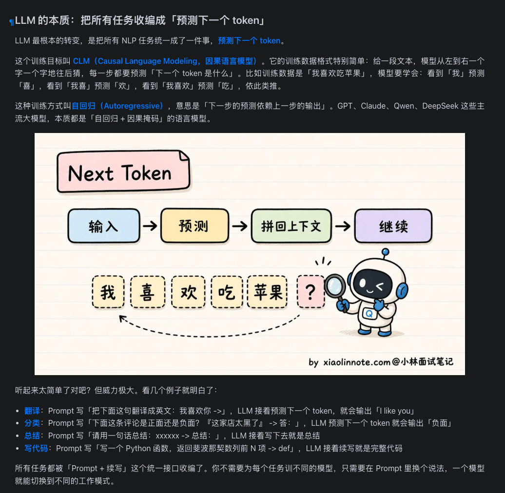
这种训练方式叫自回归（Autoregressive）：下一步的预测依赖上一步的输出。GPT、Claude、Qwen、DeepSeek 等主流大模型本质上都是「自回归 + 因果掩码」的语言模型。
Prompt：统一的任务接口
因为所有任务都被统一到「续写文本」这个目标上，所以只要换一种 Prompt 说法，同一个模型就能切换工作模式。
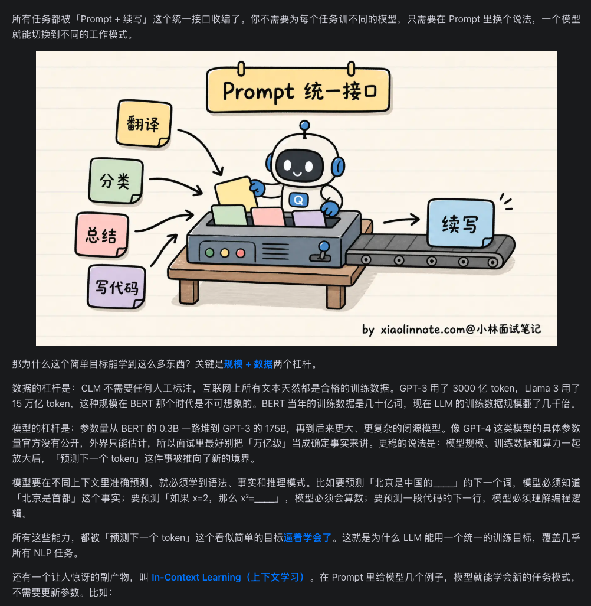
Prompt：「把『我喜欢你』翻译成英文：」
LLM 续写 →「I like you」
Prompt：「这条评论是正面还是负面？这家店太黑了 → 」
LLM 续写 →「负面」
Prompt：「请用一句话总结：xxxxx → 总结：」
LLM 续写就是总结
Prompt：「写一个 Python 函数返回斐波那契前 N 项 → def」
LLM 续写就是完整代码
四、规模 + 数据：从量变到质变
为什么「预测下一个 token」这么简单的目标能学到这么多能力？关键是两个杠杆：
- 数据杠杆：CLM 不需要人工标注，互联网上所有文本都是训练数据。GPT-3 用了 3000 亿 token，Llama 3 用了 15 万亿 token。
- 模型杠杆：参数量从 BERT 的 0.3B，到 GPT-3 的 175B，再到后来的千亿/万亿级。
涌现能力（Emergent Abilities）
当规模超过某个临界点，模型会突然表现出训练目标里没有显式教过的能力，比如多步推理、上下文学习、跨语言迁移。
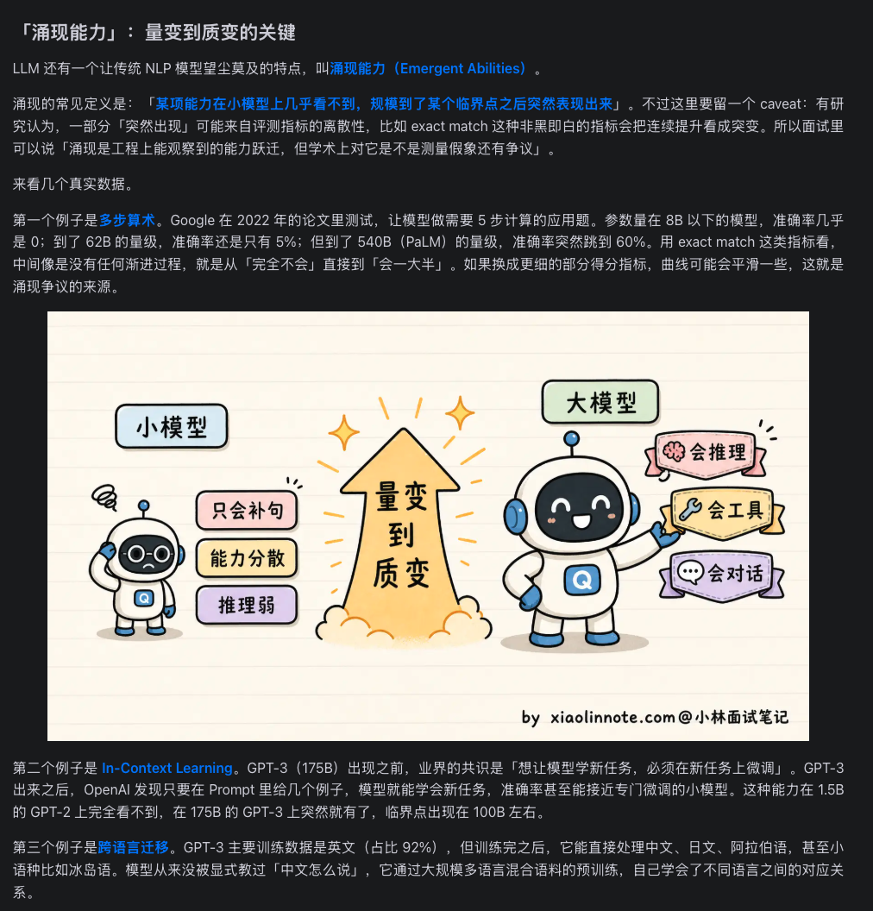
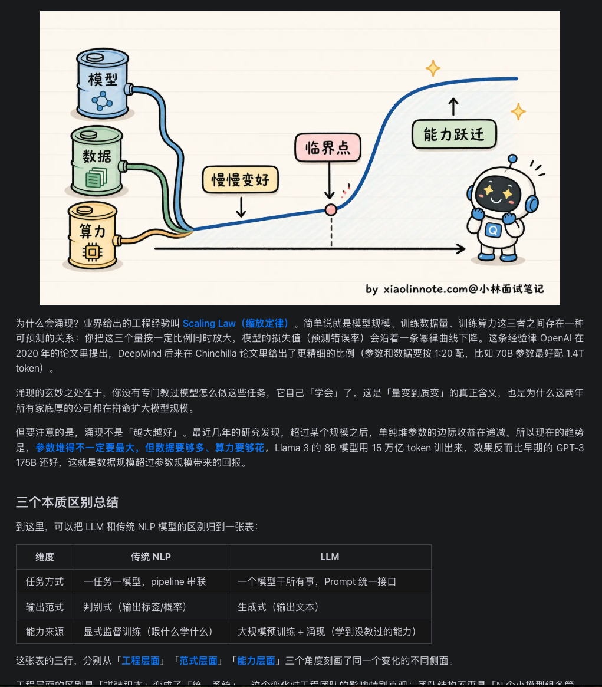
五、一张图看懂核心区别
下面用 SVG 图把传统 NLP、BERT 和 LLM 三代范式的架构差异画出来。
传统 NLP：多模型流水线
传统 NLP：多个专门模型串联，最终输出一个标签
BERT：一个 backbone + 多个任务头
BERT：共享预训练 backbone，但下游任务仍需适配专用头
LLM：一个模型 + Prompt 统一接口
LLM：所有任务统一为「文本续写」，Prompt 是唯一接口
六、三维度对比总表
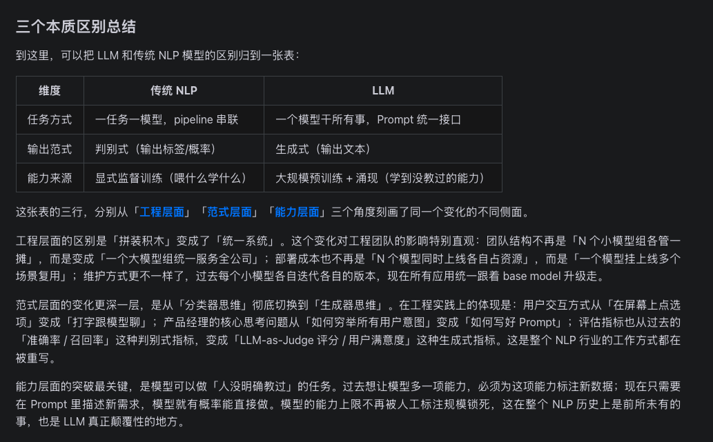
| 维度 | 传统 NLP | LLM |
|---|---|---|
| 任务方式 | 一任务一模型，pipeline 串联 | 一个模型干所有事，Prompt 统一接口 |
| 输出范式 | 判别式（输出标签/概率） | 生成式（输出文本） |
| 能力来源 | 显式监督训练，喂什么学什么 | 大规模预训练 + 涌现，学到没教过的能力 |
| 数据依赖 | 依赖人工标注，换任务要重新标 | 预训练无需人工标注，互联网文本即可训练 |
| 迁移成本 | 换领域基本重新训练整套 pipeline | 通过 Prompt / 少样本示例即可迁移 |
| 错误特性 | 错误逐级传导，难以修复 | 端到端，错误可在生成过程中自我修正 |
七、一个模型干所有事
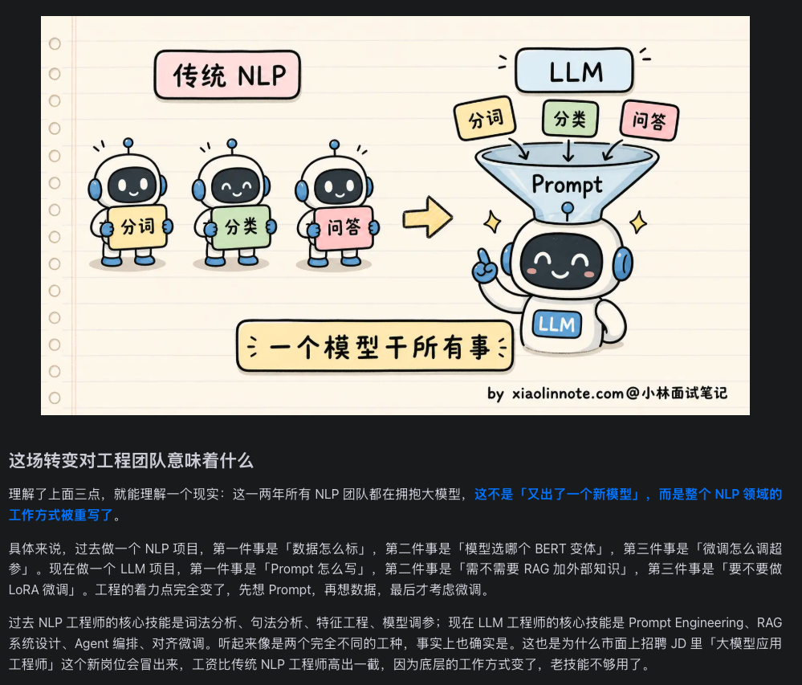
这张图非常形象地说明了工程层面的变化：
- 左边：每个任务一个小机器人，各管一摊。
- 右边：一个 LLM 机器人，头顶漏斗接收各种 Prompt，自动切换成分词、分类、问答等模式。
八、这场转变对工程团队意味着什么
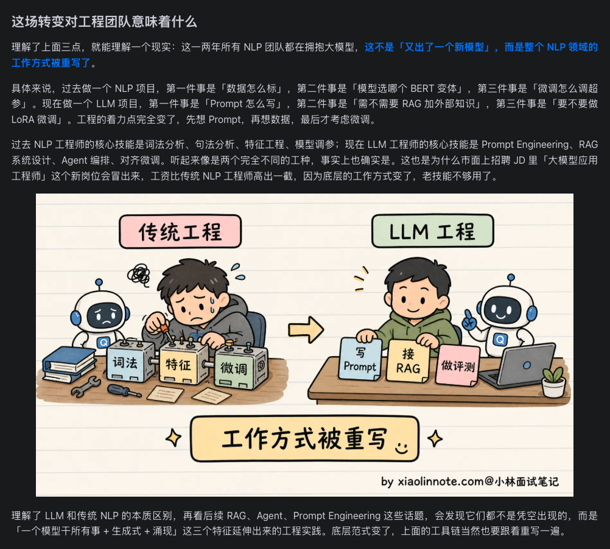
这不仅仅是「又出了一个新模型」，而是整个 NLP 领域的工作方式被重写了。
过去做 NLP 项目
- 数据怎么标？
- 选哪个 BERT 变体？
- 微调超参怎么调？
核心技能：词法分析、句法分析、特征工程、模型调参。
现在做 LLM 项目
- Prompt 怎么写？
- 需不需要 RAG 加外部知识？
- 要不要做 LoRA 微调？
核心技能：Prompt Engineering、RAG 系统设计、Agent 编排、对齐微调。
九、面试回答模板
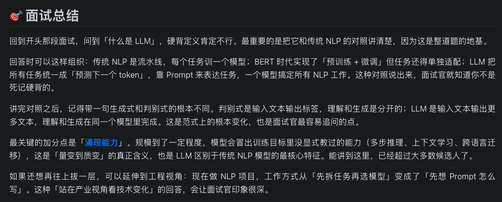
如果面试被问到「大模型和传统 NLP 模型有什么区别」，可以这样组织：
- 先讲对照：传统 NLP 是流水线，每个任务一个模型；BERT 实现预训练+微调但任务还要单独适配；LLM 把所有任务统一成「预测下一个 token」，靠 Prompt 表达任务。
- 再讲范式：判别式输入文本输出标签，理解和生成分开；LLM 输入文本输出文本，理解和生成在同一个模型里完成。
- 最后讲涌现：规模到了一定程度，模型会冒出训练目标没显式教过的能力，这是 LLM 区别于传统 NLP 最核心的特征。
十、我的补充理解
结合上面的图和实际使用经验，我认为 LLM 与传统 NLP 的区别还可以从三个更底层的视角来看：
1. 从「函数」到「通用计算机」
传统 NLP 模型像一个专用函数：输入固定格式，输出固定格式，功能单一。LLM 更像一台通用计算机：你给它不同的程序（Prompt），它就能执行不同的任务。
2. 从「标注数据驱动」到「语言本身驱动」
传统模型能力的上限被人工标注数据的规模锁死；LLM 的能力上限被语言本身的丰富度和模型规模解锁，因为互联网上的文本天然包含知识、逻辑和推理。
3. 从「完成任务」到「与人协作」
传统模型是后台工具，输出结果给系统用；LLM 可以直接与人对话，通过多轮交互澄清需求、展示推理过程、接受反馈修正。这种交互式能力让它从「组件」变成了「助手」。